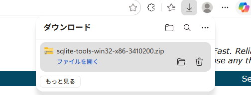
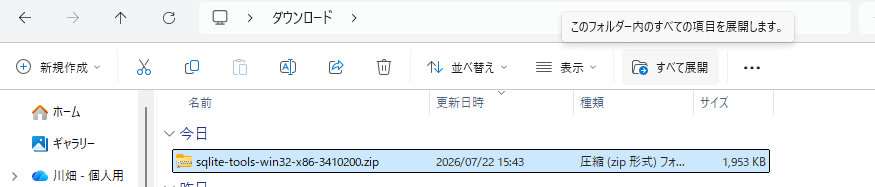

「データベース」って言葉は聞くけど、実は何なの？ ——
フルーツ店の売上データを例に、いちばんやさしいところから始めます🍓
データベースとは、ひとことで言うと 「整理されて保管されたデータの集まり」と「それを管理するしくみ」 のことです。
データがバラバラに散らばっていると、目的の1件を探すのは大変。でもデータベースにきれいに整理しておけば、大量のデータの中から欲しいものを一瞬で取り出せます。
データベースを管理するためのソフトウェアのことを DBMS（DataBase Management System＝データベース管理システム）と呼びます。
DBMS には大きく3つの種類があり、その中でも いちばん広く使われている のが「リレーショナルデータベース」です。
🏆 代表的な RDBMS（それぞれ得意分野があります）
商用でのシェアが高く、大規模なシステムで利用される。
オープンソースで、Webアプリケーションの開発に利用される。
拡張性があり独自の処理を追加できるため、複雑なデータ構成のシステムに利用される。
小規模で高速に動作するため、小規模なシステムや IoT 機器などに利用される。
リレーショナルデータベースでは、データを テーブルと呼ばれる 2次元の表 で表します。まさに Excel の表のようなイメージです。
テーブルには、覚えておきたい部品の名前があります。実際のフルーツ店の売上データ（sales テーブル）で見てみましょう👇
sales テーブル。縦＝カラム／横＝レコード／1マス＝フィールド。1レコードが1件分のデータ。リレーショナルデータベースでは、複数のテーブルを1つのデータベースで管理できます。そしてテーブル同士を 関連づけて 扱えるのが最大の特徴。これが "リレーショナル（関係のある）" の由来です。
※ この章のサンプルはテーブル1つだけですが、実際のシステムでは複数のテーブルを関連づけて使います。
いよいよ主役の登場です。SQL は、RDBMS の データを操作するための言語。SQL で書いた命令のことを SQL文 と呼び、これを使ってデータを 入れたり・取り出したり します。
この本で使う SQLite は、手軽さがウリの RDBMS。良いところも、苦手なところもハッキリしています。
つまり 「まず1人で学ぶ・試す」には最高。だから入門にぴったりなんです。
🌐 RDBMS は普段どこで動いてる？
ショッピングサイトのような Web アプリでは、RDBMS は サーバ側で動きます。私たちが触るブラウザ側は クライアント側。検索や購入のたびに、裏側のアプリが RDBMS に SQL文を渡し、結果を受け取っています。
ここからは実践。SQLite の準備は たった4ステップ。公式サイトからツールをダウンロードして、作業用フォルダに置くだけです。
公式サイト：https://www.sqlite.org/download.html から、コマンドラインツール入りの zip をダウンロードします。
公式サイトから zip を入手
zip を右クリック→展開
「sql1nen」に中身をコピー
これで使える状態に


ドキュメントフォルダに sql1nen という名前のフォルダを作り、展開した中身をコピー＆貼り付け。これで準備はおしまいです。
準備ができたら、コマンドプロンプト（ターミナル）から操作します。順番に見ていきましょう。他の RDBMS は起動・終了に時間がかかることもありますが、SQLite は一瞬。手軽さがウリです。
cd＝change directory の略。今いるフォルダ（＝カレントディレクトリ）を変更する命令です。sql1nen フォルダのパスを貼り付けます。
sqlite3 開きたいDB名 で起動。ファイルが無ければ新規作成されます（ここでは sample.db）。プロンプト左が sqlite> に変われば起動成功！
※ この時点ではまだ sample.db は保存されません。テーブル作成などの操作をして初めてファイルが作られます。
サンプルの chap1_sales.sql を sql1nen に置き、.read で読み込みます。中の SQL文が実行され、sales テーブルとデータが作られます。
.tables でテーブル一覧を確認できます。テーブルを作ったことで sql1nen フォルダに sample.db が作成されます。（データの中身を見るには SELECT 文を使いますが、それは次章以降で！）
終了は必ず .exit で。SQL文の実行中に強制終了すると、DBファイルが壊れる恐れがあります。
「.（ドット）」で始まる命令（.read .tables .exit など）は、SQLite 独自のコマンドで、SQL文ではありません。
これらは Oracle Database や MySQL など別の RDBMS では使えません。逆にそれぞれの RDBMS にも独自のコマンドがあります。別の RDBMS を使うときは、そのコマンドを確認しましょう。
おつかれさまでした🎉 第1章で出てきた大事な言葉を並べておきます。全部つながっていますよ。